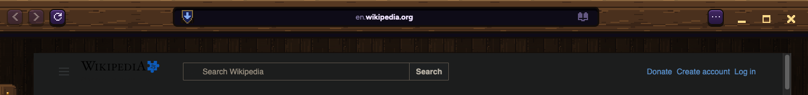
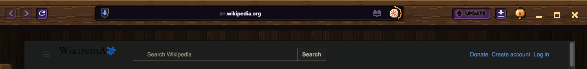
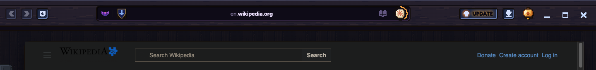

Sheet 96 · The whole bar, as one thing
Version 1 drew new bars from scratch and threw away choices you already made. This one starts from Samara's real bar, keeps every pick, and only fixes what feels disconnected. All pictures are Samara itself.
YOUR RULES FOR THE BAR, FROM PAST SHEETS
- One carved band. The top is the only place controls live. Nothing Samara asks ever shows inside the page. sheet 3
- Tabs live in the rail on the left, opened by the handle with the arrow. sheets 3, 70
- A lip along the top to grab the window by. sheet 22
- Light wood for bars and frames, dark wood behind content, carved wood for name tags. No flat browns. sheet 27
- Pixel art always, whole sizes only, never blurry or muddy. Each size drawn for its own size. sheet 32
- Stardew icons: chunky, coloured outlines (never pure black), two or three tones, light from the top-left. sheet 24
- Samara's palette: wood, plum, gold, parchment. Every colour means something. sheets 33, 49
- The address bar sits calm in the middle and shows the site's name. It slides out wide only while you type. sheet 88
- Words are meant to be read: Figtree, not the pixel font. sheet 64
- Window keys: bold gold symbols on the bare wood, red for close. 2026-10-12
- Things have a home in the bar: the shield (a site's rules), the key (autofill and the lock), the small lit TV, the star. sheets 37, 77, 89
- The update key warms gold, turquoise, then red as days pass. Downloads only show when there's something. sheet 35
- Asks hang from the band as parchment with a notch, never in the page. sheet 86
- The secret window is moonlit navy wood, with silver for gold. sheet 87
- Claude's rune at its "perfect size", 36 px with its ring. The "who" label is the door to that session. sheets 50, 64
TODAY

ONE PLANK, KEEPING YOUR PICKS
- The wood at its true size. Today it's stretched to 2.2x tall, which blurs the grain. Now it's exactly 2x, like every icon.
- Keys carved into the wood. The plum stays, but as a flat inlay with a dark top-left and a lit lip, like the wood. No smooth shine.
- The address bar carved the same way, still calm in the middle with the site's name.
- The lantern is the menu, standing on the wood where the ... was. Pixel lantern at 2x.
- One home for Claude: the rune with its ring sits at the end of the address bar, where CLAUDE IS DRIVING already shows.
- Shown with the update and downloads keys in, so you see where everything lives.

THE SAME, IN THE SECRET WINDOW
